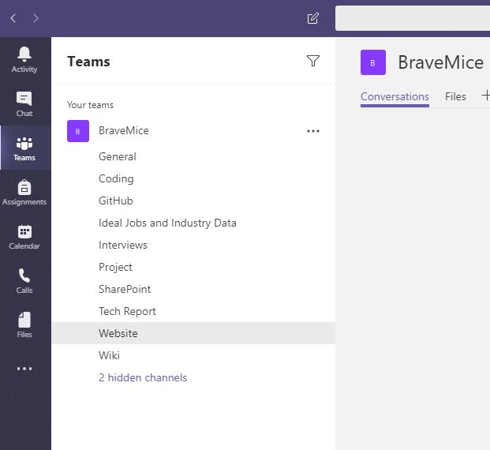

Group processes and communication
Microsoft Teams
Our group will communicate primarily through Microsoft teams, as it worked quite well for us in assignment 2. As we have become more familiar with using the platform and have more experience using it, we learned what worked and what didn’t.

What didn’t work:
In assignment 2 we separated our tasks into individual channels, which we thought would make the group more productive. However, unlike the groups main chat, which would notify members when someone has sent a message, the separate channels would not. Because there were multiple channels each member would have to go into the channel section then again into each individual channel to see how each task was progressing. In the end we mostly resorted to communicating through the main chat, which worked for the remainder of assignment 2.What we learned:
In Assignment 3 we began in much the same way that we ended in Assignment 2. We only used the main chat to communicate and this quickly become an issue, as the chat became flooded with information and we found ourselves constantly scrolling up to read it. It was obvious that we needed some way to separate and filter all the important information so it can be easily accessed and won’t be lost to the sea of messages in the main chat. Travis proposed a solution of using a single channel containing a checklist of all the tasks so that each member of the group can easily access and tick off their assigned task and attach it, whilst also seeing all the other tasks and whether or not they have been completed. This has freed up the groups main chat for discussing issues and allows for more ‘big picture’ conversations about the project as a whole.


Adobe XD
Adobe XD offered the group the ability to comment and discuss the wireframe of the mobile app via a web link that retained the same address even when the wireframe was updated. This allowed the group to follow along with the progress of the wireframe.
Link to GamR wireframe: https://xd.adobe.com/spec/297b5083-5066-4570-7a5d-a929f6529169-5f4a/Availability and Frequency of Communication
The group was relatively slow to start assignment 3, this could be attributed to the group not specifying any expected frequency of communication. Choosing instead to communicate intermittently through Microsoft Teams whenever we were available, just like in Assignment 2. Rather than organise meetings or set times for communication, resulting in our delayed start to assignment 3.
Conclusion
Overall, we worked pretty well for a group of strangers that have only known each other for a few weeks, and seeing as though we have never met, and our schedules are all over the place, it came together alright. Trevor really got the ball rolling in Assignment 2, however due to personal circumstances he was unable to commit the same level of attention going into Assignment 3. As a group we were not really firing on all cylinders with Trevor gone, and so most of the group foundation was based on his early efforts. Nevertheless, we managed to deal with the hand we've been dealt and all chipped in where needed to get it done, despite it being a bit uncoordinated.